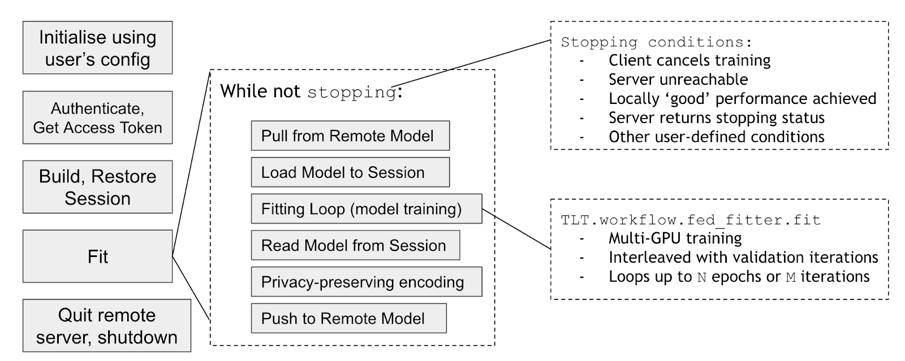

Federated learning workflow¶
Federated learning server-side workflow¶

When starting a federated learning server-side service, the server side config files, including FL service name, gPRC communication ports, SSL certificate keys, minimum and maximum number of clients, etc, are used to initialize and restore the initial model and start the FL service. After the initialization, the server enters into a loop, waiting for clients’ joining request, then issuing the model to the clients, and waiting for the clients to send back the updated models. Once the server receives all the updated models from the clients, it performs the aggregation based on the weight aggregation algorithms, and updates the current overall model. This updated overall model is then used for the next round of model training, and this process is repeated until the server reaches the maximum rounds of the federated learning training.
Federated learning client-side workflow¶
On the client side of federated learning model training, the client first uses the client configuration to initialize. Then, the client uses the client credential to make a login request to the server to get a FL training token. Once the token is obtained, the client requests the current model from the server. It uses the current global model to build and restore the TF session to start the local training using the local data for fitting the current model. During the local training, the client has control how many epochs to run for each round of FL training. It also has to control whether the local training is run on a single GPU or multiple GPUs.
Once the client finishes the current round of the local model training, the clients sends the updated local model to the server. The client can configure its own privacy preserving policies on how much of the weights to send back to the server for aggregation. After that, the client makes a request to the server asking for the new global model to start a new round of federated learning training.
Cross Site Validation¶
During federated learning training, a bunch of different models are trained. These include the global server model, models generated by some handlers and each client’s local best model. Once training is done, we may like to validate these models on each client’s data. We call this process Cross site validation. This is an optional step after training.
Once training finishes, and if the client is participating in cross site validation, it sends it’s best local model to the server. It then asks the server for any models to validate. The server can have 3 possible responses 1) Send a model, 2) Ask the client to wait because models are not ready yet or 3) Tell client that no more models need to be validate. Based on the response, the client 1) validates model and sends the results 2) Wait for some time before asking again 3) Finish.
Through this process, each client validates models of all other clients, server global model and models generated by handler. The results can be fetched from the server.